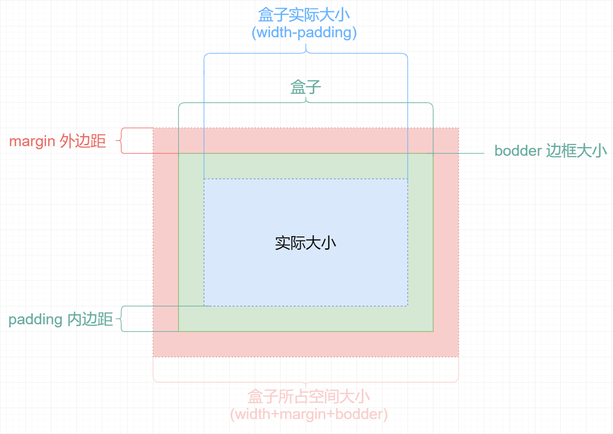
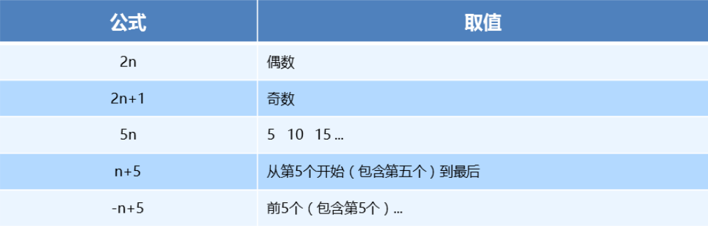

CSS盒子模型
标签显示模式（display）¶
块级元素(block-level)¶
例：
常见的块元素有<h1>~<h6>、<p>、<div>、<ul>、<ol>、<li>等，其中<div>标签是最典型的块元素。

块级元素的特点
（1）比较霸道，自己独占一行
（2）高度，宽度、外边距以及内边距都可以控制。
（3）宽度默认是容器（父级宽度）的100%
（4）是一个容器及盒子，里面可以放行内或者块级元素。
- 注意：
- 只有 文字才 能组成段落 因此 p 里面不能放块级元素，特别是 p 不能放div
- 同理还有这些标签h1,h2,h3,h4,h5,h6,dt，他们都是文字类块级标签，里面不能放其他块级元素。
行内元素(inline-level)¶
例：
常见的行内元素有<a>、<strong>、<b>、<em>、<i>、<del>、<s>、<ins>、<u>、<span>等，其中<span>标签最典型的行内元素。有的地方也成内联元素

- 行内元素的特点：
（1）相邻行内元素在一行上，一行可以显示多个。
（2）高、宽直接设置是无效的。
（3）默认宽度就是它本身内容的宽度。
（4）行内元素只能容纳文本或则其他行内元素。
注意
- 链接里面不能再放链接。
- 特殊情况a里面可以放块级元素，但是给a转换一下块级模式最安全。
行内块元素（inline-block）¶
- 例：在行内元素中有几个特殊的标签——
、、
，可以对它们设置宽高和对齐属性，有些资料可能会称它们为行内块元素。 
行内块元素的特点：
（1）和相邻行内元素（行内块）在一行上,但是之间会有空白缝隙。一行可以显示多个 （2）默认宽度就是它本身内容的宽度。 （3）高度，行高、外边距以及内边距都可以控制。
三种模式总结区别¶
元素模式 元素排列 设置样式 默认宽度 包含 块级元素 一行只能放一个块级元素 可以设置宽度高度 容器的100% 容器级可以包含任何标签 行内元素 一行可以放多个行内元素 不可以直接设置宽度高度 它本身内容的宽度 容纳文本或则其他行内元素 行内块元素 一行放多个行内块元素 可以设置宽度和高度 它本身内容的宽度 标签显示模式转换 display¶
- 块转行内：display:inline;
- 行内转块：display:block;
- 块、行内元素转换为行内块： display: inline-block;
此阶段，我们只需关心这三个，其他的是我们后面的工作。
盒子模型（CSS重点）¶
网页布局的本质¶
网页布局中，我们是如何把里面的文字，图片，按照美工给我们的效果图排列的整齐有序呢？

- 看透网页布局的本质：
- 首先利用CSS设置好盒子的大小，然后摆放盒子的位置。
- 最后把网页元素比如文字图片等等，放入盒子里面。
- 以上两步 就是网页布局的本质
盒子模型（Box Model）¶
盒子模型：就是把HTML页面中的布局元素看作是一个矩形的盒子，也就是一个盛装内容的容器。

总结：
- 盒子模型有元素的内容、边框（border）、内边距（padding）、和外边距（margin）组成。
- 盒子里面的文字和图片等元素是 内容区域
- 盒子的厚度 我们成为 盒子的边框
- 盒子内容与边框的距离是内边距（类似单元格的 cellpadding)
- 盒子与盒子之间的距离是外边距（类似单元格的 cellspacing）
标准盒子模型

盒子边框（border）¶

- 语法：
border : border-width || border-style || border-color属性 作用 border-width 定义边框粗细，单位是px border-style 边框的样式 border-color 边框颜色 - 边框的样式：
- none：没有边框即忽略所有边框的宽度（默认值）
- solid：边框为单实线(最为常用的)
- dashed：边框为虚线
- dotted：边框为点线
边框综合设置¶
border : border-width || border-style || border-color例如：
border: 1px solid red; 没有顺序盒子边框写法总结表¶
很多情况下，我们不需要指定4个边框，我们是可以单独给4个边框分别指定的。
上边框 下边框 左边框 右边框 border-top-style:样式; border-bottom-style:样式; border-left-style:样式; border-right-style:样式; border-top-width:宽度; border- bottom-width:宽度; border-left-width:宽度; border-right-width:宽度; border-top-color:颜色; border- bottom-color:颜色; border-left-color:颜色; border-right-color:颜色; border-top:宽度 样式 颜色; border-bottom:宽度 样式 颜色; border-left:宽度 样式 颜色; border-right:宽度 样式 颜色; 内边距（padding）¶
内边距：¶
padding属性用于设置内边距。 是指 边框与内容之间的距离。
设置¶
属性 作用 padding-left 左内边距 padding-right 右内边距 padding-top 上内边距 padding-bottom 下内边距 当我们给盒子指定padding值之后， 发生了2件事情：
- 内容和边框 有了距离，添加了内边距。
- 盒子会变大了。
注意： 后面跟几个数值表示的意思是不一样的。
我们分开写有点麻烦，我们可以不可以简写呢？
值的个数 表达意思 1个值 padding：上下左右内边距; 2个值 padding: 上下内边距 左右内边距 ； 3个值 padding：上内边距 左右内边距 下内边距； 4个值 padding: 上内边距 右内边距 下内边距 左内边距 ； 
课堂一练：
请写出如下内边距：
- 要求盒子有一个左边内边距是 5像素
- 要求简写的形式写出 一个盒子上下是 25像素 左右是15像素。
- 要求简写的形式写出 一个盒子 上内边距是 12像素 下内边距是 0 左内边距是 25像素 右内边距是 10像素
课堂案例： 新浪导航
新浪导航栏的核心就是因为里面的字数不一样多，所以我们不方便给宽度，还是给 padding ，撑开盒子的。

内盒尺寸计算（元素实际大小）¶

- 宽度
Element Height = content height + padding + border （Height为内容高度）
- 高度
Element Width = content width + padding + border （Width为内容宽度）
- 盒子的实际的大小 = 内容的宽度和高度 + 内边距 + 边框
外边距（margin）¶

外边距¶
margin属性用于设置外边距。 margin就是控制**盒子和盒子之间的距离**
设置：¶
属性 作用 margin-left 左外边距 margin-right 右外边距 margin-top 上外边距 margin-bottom 下外边距 margin值的简写 （复合写法）代表意思 跟 padding 完全相同。
块级盒子水平居中¶
- 可以让一个块级盒子实现水平居中必须：
- 盒子必须指定了宽度（width）
- 然后就给**左右的外边距都设置为auto**，
实际工作中常用这种方式进行网页布局，示例代码如下：
.header{ width:960px; margin:0 auto;}常见的写法，以下下三种都可以。
- margin-left: auto; margin-right: auto;
- margin: auto;
- margin: 0 auto;
文字居中和盒子居中区别¶
- 盒子内的文字水平居中是 text-align: center, 而且还可以让 行内元素和行内块居中对齐
- 块级盒子水平居中 左右margin 改为 auto
text-align: center; /* 文字 行内元素 行内块元素水平居中 */ margin: 10px auto; /* 块级盒子水平居中 左右margin 改为 auto 就阔以了 上下margin都可以 */清除元素的默认内外边距(重要)¶

为了更灵活方便地控制网页中的元素，制作网页时，我们需要将元素的默认内外边距清除
代码：
* { padding:0; /* 清除内边距 */ margin:0; /* 清除外边距 */ }注意：
- 行内元素为了照顾兼容性， 尽量只设置左右内外边距， 不要设置上下内外边距。
@CSS3 属性选择器¶
-
什么是
CSS3 -
在
CSS2的基础上拓展、新增的样式 -
CSS3发展现状 -
移动端支持优于
PC端 CSS3目前还草案，在不断改进中-
CSS3相对H5，应用非常广泛 -
属性选择器列表

- 属性选择器代码演示
button { cursor: pointer; } button[disabled] { cursor: default }代码演示
input[type=search] { color: skyblue; } span[class^=black] { color: lightgreen; } span[class$=black] { color: lightsalmon; } span[class*=black] { color: lightseagreen; }结构伪类选择器¶
- 属性列表

- 代码演示
ul li:first-child { background-color: lightseagreen; } ul li:last-child { background-color: lightcoral; } ul li:nth-child(3) { background-color: aqua; }nth-child参数详解¶-
nth-child 详解
-
注意：本质上就是选中第几个子元素
-
n 可以是数字、关键字、公式
-
n 如果是数字，就是选中第几个
-
常见的关键字有
even偶数、odd奇数 -
常见的公式如下(如果 n 是公式，则从 0 开始计算)
-
但是第 0 个元素或者超出了元素的个数会被忽略

-
代码演示
<style> /* 偶数 */ ul li:nth-child(even) { background-color: aquamarine; } /* 奇数 */ ul li:nth-child(odd) { background-color: blueviolet; } /*n 是公式，从 0 开始计算 */ ul li:nth-child(n) { background-color: lightcoral; } /* 偶数 */ ul li:nth-child(2n) { background-color: lightskyblue; } /* 奇数 */ ul li:nth-child(2n + 1) { background-color: lightsalmon; } /* 选择第 0 5 10 15, 应该怎么选 */ ul li:nth-child(5n) { background-color: orangered; } /* n + 5 就是从第5个开始往后选择 */ ul li:nth-child(n + 5) { background-color: peru; } /* -n + 5 前五个 */ ul li:nth-child(-n + 5) { background-color: tan; } </style>伪元素选择器¶
伪类选择器

伪类选择器注意事项
before和after必须有content属性before在内容前面，after 在内容后面before和after创建的是一个元素，但是属于行内元素- 创建出来的元素在
Dom中查找不到，所以称为伪元素 - 伪元素和标签选择器一样，权重为 1
代码演示
<style> div { width: 100px; height: 100px; border: 1px solid lightcoral; } div::after, div::before { width: 20px; height: 50px; text-align: center; display: inline-block; } div::after { content: '德'; background-color: lightskyblue; } div::before { content: '道'; background-color: mediumaquamarine; } </style>伪元素的案例¶
- 添加字体图标
p { width: 220px; height: 22px; border: 1px solid lightseagreen; margin: 60px; position: relative; } p::after { content: '\ea50'; font-family: 'icomoon'; position: absolute; top: -1px; right: 10px; }